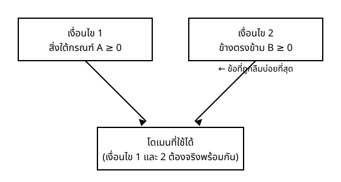

Maths Fundamentals for DS & CS — สัปดาห์ 01
จะเรียน:
สิ่งที่ต้องมีมาก่อน: ผลเฉลยแปลกปลอมจากช่วงที่ 1
ขั้น 1 เขียนโดเมน ค่าใดที่สมการไม่นิยาม
ขั้น 2 แก้ กำจัดตัวส่วนหรือกรณฑ์ (ขั้นตอนทางเดียว)
ขั้น 3 ตรวจคำตอบทุกค่า เทียบกับสมการตั้งต้น ไม่ใช่บรรทัดกลางทำไมต้องมีขั้น 3 เสมอ — เพราะขั้น 2 ของทั้งสองชนิดเป็น $\Longrightarrow$ ทางเดียว
ที่ค่าซึ่งตัวส่วนเป็นศูนย์ สมการ ไม่นิยาม — ไม่ใช่ว่า "เป็นเท็จ" แต่คือพูดถึงความจริงเท็จของมันไม่ได้เลย
$$ \frac{P(x)}{Q(x)} = R(x) \quad \text{ต้องมี } Q(x) \ne 0 $$
ผลที่ตามมาสองข้อ
โจทย์: แก้ $\dfrac{1}{x} + \dfrac{1}{2} = \dfrac{3}{4}$
$$ \begin{aligned} &\text{โดเมน: } x \ne 0 && \\ \frac{1}{x} &= \frac{3}{4} - \frac{1}{2} = \frac{1}{4} && \text{ย้ายค่าคงตัวไปขวา} \\ x &= 4 && \text{กลับเศษส่วน} \end{aligned} $$
ตรวจคำตอบ: $\dfrac{1}{4} + \dfrac{1}{2} = \dfrac{3}{4}$ ✓ และ $4 \ne 0$ อยู่ในโดเมน ✓
ตอบ: $\{4\}$
โจทย์: แก้ $\dfrac{3}{x-1} = \dfrac{2}{x+1}$
$$ \begin{aligned} &\text{โดเมน: } x \ne 1 \;\text{ และ }\; x \ne -1 && \\ 3(x+1) &= 2(x-1) && \text{คูณไขว้} \;(\Longrightarrow \text{ เท่านั้น}) \\ 3x + 3 &= 2x - 2 \;\Rightarrow\; x = -5 && \end{aligned} $$
ตรวจคำตอบ: ข้างซ้าย $\dfrac{3}{-6} = -\dfrac12$ · ข้างขวา $\dfrac{2}{-4} = -\dfrac12$ ✓ และ $-5$ อยู่ในโดเมน ✓
ตอบ: $\{-5\}$
คูณไขว้ใช้ได้กับสมการเท่านั้น ในอสมการห้ามทำ — ช่วงถัดไปจะเห็นว่าทำไม
สำหรับ $\sqrt{A} = B$ ต้องมีทั้งสองข้อพร้อมกัน
$$ \begin{aligned} \textbf{เงื่อนไข 1:}\quad & A \ge 0 && \text{สิ่งใต้กรณฑ์ต้องไม่เป็นลบ} \\ \textbf{เงื่อนไข 2:}\quad & B \ge 0 && \text{เพราะกรณฑ์ที่สองให้ค่าที่ไม่เป็นลบเสมอ} \end{aligned} $$
เงื่อนไข 2 คือข้อที่ถูกละเลยมากที่สุด และเป็นที่มาของผลเฉลยแปลกปลอมในทุกกรณี

โจทย์: แก้ $\sqrt{x+4} = 3$
$$ \begin{aligned} &\text{โดเมน: } x + 4 \ge 0 \;\Rightarrow\; x \ge -4 \;\text{ และ }\; 3 \ge 0 \;\checkmark && \\ x + 4 &= 9 && \text{ยกกำลังสอง} \\ x &= 5 && \end{aligned} $$
ตรวจคำตอบ: $\sqrt{5+4} = \sqrt{9} = 3$ ✓
ตอบ: $\{5\}$
โจทย์: แก้ $\sqrt{x+4} - x = 2$
$$ \begin{aligned} &\text{โดเมน: } x \ge -4 \;\text{ และ }\; x + 2 \ge 0 \;\Rightarrow\; x \ge -2 && \\ \sqrt{x+4} &= x + 2 && \text{แยกกรณฑ์ไว้ข้างเดียวก่อน} \\ x + 4 &= x^2 + 4x + 4 && \text{ยกกำลังสอง} \;(\Longrightarrow \text{ เท่านั้น}) \\ 0 &= x(x+3) && \Rightarrow\; x = 0 \;\text{ หรือ }\; -3 \end{aligned} $$
ตรวจคำตอบ: $x=0$ ให้ $\sqrt{4} - 0 = 2$ ✓ · $x=-3$ ให้ $\sqrt{1} + 3 = 4 \ne 2$ ✗
ตอบ: $\{0\}$
ย้อนดูตัวอย่างที่แล้ว ซึ่งเขียนโดเมนไว้ว่า $x \ge -2$
$$ x = 0 \;\ge -2 \;\checkmark \qquad\qquad x = -3 \;<\; -2 \;\;✗ $$
$x = -3$ ตกรอบตั้งแต่ยังไม่ต้องแทนค่ากลับเข้าสมการเลย
ข้อสังเกต — บรรทัดโดเมนเปลี่ยนสถานะจากพิธีกรรมมาเป็นเครื่องมือวิเคราะห์ ผู้ที่ข้ามขั้นตอนนั้นไปจำเป็นต้องแทนค่าทุกค่าเพื่อตรวจสอบว่าค่าใดเป็นผลเฉลยแปลกปลอม ในขณะที่ผู้ที่เขียนโดเมนไว้ล่วงหน้าย่อมทราบคำตอบได้ก่อน
| ที่พลาด | วิธีกัน |
|---|---|
| ยกกำลังสองทั้งที่กรณฑ์ยังไม่อยู่ข้างเดียว | แยกกรณฑ์ให้อยู่ข้างเดียวก่อนเสมอ |
| ลืมเงื่อนไขว่าข้างตรงข้ามต้องไม่เป็นลบ | เขียนสองเงื่อนไขทุกครั้ง |
| ตอบ $\mathbb{R}$ ทั้งที่โดเมนมีรูรั่ว | อ่านบรรทัดโดเมนซ้ำก่อนเขียนคำตอบสุดท้าย |
| ตรวจคำตอบกับบรรทัดกลาง | ค่าแปลกปลอมสามารถผ่านการตรวจสอบที่บรรทัดกลางได้ทุกกรณี — ตรวจกับสมการตั้งต้นเท่านั้น |
| คูณไขว้ในอสมการ | คูณไขว้ใช้ได้กับสมการเท่านั้น |
ตัวส่วนที่เป็นศูนย์ เป็นสาเหตุสำคัญอันดับต้นของ NaN และ inf ที่ปรากฏขึ้นกลาง pipeline สูตรที่ใช้งานทั่วไปล้วนมีความเสี่ยงที่ตัวส่วนจะเป็นศูนย์ได้ทั้งสิ้น
เงื่อนไขใต้กรณฑ์ มีสถานการณ์คู่ขนานที่ตรงกว่านั้น — สูตรทางสถิติมีกรณฑ์ปรากฏอยู่ทั่วไป และสิ่งใต้กรณฑ์มักเป็นความแปรปรวนซึ่งไม่เป็นลบโดยธรรมชาติ จนกว่าความคลาดเคลื่อนเชิงตัวเลขจะทำให้ค่านั้นติดลบเล็กน้อยเป็น $-10^{-16}$ แล้วโค้ดจะล้มเหลวทันที
จบช่วงนี้ควรทำได้:
ตั้งค้างไว้: ตรรกะเดียวกันนี้จะใช้กับ สมการลอการิทึมในสัปดาห์ 2 — ที่นั่นโดเมนคือ $x > 0$ และการรวมพจน์ทำให้โดเมนกว้างขึ้นแบบเดียวกับที่ยกกำลังสองทำที่นี่
การบ้าน: exercises/ex_01.md ข้อ 17–22 · ตัวอย่าง 3.3 และ 3.6 มีแต่ใน note — 3.6 เป็นกรณีที่ยกกำลังสองแล้ว ไม่มี ผลเฉลยแปลกปลอม ซึ่งอธิบายได้ว่าเหตุใดกฎนี้จึงมิใช่กฎที่ปราศจากเหตุผล